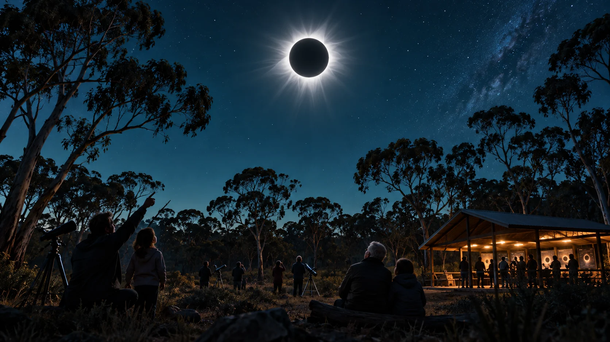

GenAI concept artworkA shared horizon, a practical beginning
Australia's next four total solar eclipses and the Brisbane 2032 Olympic and Paralympic Games offer a remarkable sequence of occasions for discovery and participation. They could give the partnership a rhythm of public learning, creative work and celebrations of progress. [10]
| Milestone | What the community could build around it |
|---|---|
| 22 July 2028 total solar eclipse | Astronomy, art, documentary work and youth projects connecting communities along the eclipse path. |
| 25 November 2030 total solar eclipse | Share early learning, strengthen regional relationships and invite new participants. |
| Brisbane 2032 Olympics and Paralympics | A legacy of accessible participation, volunteer skills, intergenerational activity and useful local technology. |
| 13 July 2037 total solar eclipse | Bring a decade of care, research and community experience into a major regional science occasion. |
| 26 December 2038 total solar eclipse | Share what communities have learned and invite the next generation to carry it forward. |
The eclipse paths cross different parts of Australia. Local activities could connect with communities along those routes, while the Amity partnership develops a continuing programme of its own. Each occasion offers a chance to leave lasting skills, relationships and useful knowledge.
Bringing the partnership together
I ask the Diocese to nominate a person for an initial conversation about the gift, the original donor's intentions and the opportunity for a care and research partnership. From there, we could invite NSI Housing, Yulu-Burri-Ba, MMEIC, interested Elders and families, alongside other care providers, researchers, engineers, educators and philanthropic participants, to explore the possibilities together.
Prospective partners could consider where they would like to contribute: land and stewardship, cultural knowledge, care and research expertise, practical skills, volunteering or financial support. I bring the vision, project development and the work of convening people. Together, we could seek the resources for each next step.
The first conversation can identify shared purpose and the people who could help. Together, we can agree the next work and how to support it, building towards the decisions needed for the gift, facilities and programmes.

A gift whose value grows through service
82 Claytons Road could become a place where generosity produces more generosity: better care, stronger relationships, new skills and discoveries that others can use. That is the promise worth exploring together, and a practical expression of Joyful Responsible Abundance.